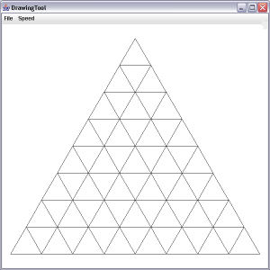

HTML quick reference
This text is in bold
This text is in italics
This text is underlined
This is a local image stored in the same folder as this html page

This is an online image from a URL
This is a webpage link
Special characters to hardcode if they're not showing up on your web page
< - less than
> - greater than
Example problems
1. Consider the code below:
01 class KeywordTester {
02 int count = 0;
03
04 public void runTest() {
05 count = 0;
06 test();
07 System.out.println(count);
08 }
09
10 public void test() {
11 for (int i = 0; i < 3; i++) {
12 for (int j = 0; j < 10; j++) {
13 count++;
14 if (j == 5) {
15 // Insert code here
16 }
17 }
18 }
19 }
20 }
Two possible replacements for line 15 are:
15 break;
15 return;
(a) Explain the difference between using a break statement
on line 15 versus using a return statement on line 15.
(b) What would the output of runTest() be for each case?
(a) A break statement on line 15 causes the program to break out of the innermost
for loop (j) and resume with the outer loop whereas a return statement on line 15
exits the entire method immediately.
(b) If break is used, the inner loop quits whenever it reaches j == 5 and the outer loop resumes.
The output is 18 because the outer loop runs 3 times and the inner loop runs 6 times for
each of the outer loop runs.
If return is used, the method quits immediately after j == 5 and the output is 6 because
the inner loop runs from 0 to 5 which is 6 iterations.
2. Consider the following output.
1 1 1 1 1
2 2 2 2
3 3 3
4 4
5
Which of the following code segments will produce this output?
(A) for (int j = 1; j <= 5; j++)
{
for (int k = 1; k <= 5; k++)
{
System.out.print(j + " ");
}
System.out.println();
}
(B) for (int j = 1; j <= 5; j++)
{
for (int k = 1; k <= j; k++)
{
System.out.print(j + " ");
}
System.out.println();
}
(C) for (int j = 1; j <= 5; j++)
{
for (int k = 5; k >= 1; k--)
{
System.out.print(j + " ");
}
System.out.println();
}
(D) for (int j = 1; j <= 5; j++)
{
for (int k = 5; k >= j; k--)
{
System.out.print(j + " ");
}
System.out.println();
}
(E) for (int j = 1; j <= 5; j++)
{
for (int k = j; k <= 5; k++)
{
System.out.print(k + " ");
}
System.out.println();
}
(D) because the first time through the outer loop, the inner loop executes
5 times (since j = 1) and prints the value of j 5 times. The next outer loop
is j = 2 and so the inner loop executes 4 times from k=5 down to the current
value of j, which is 2. The current value of j is printed 4 times. The next
outer loop is j=3, so the inner loop executes 3 times (from k=5 to k=3), etc..
3. Write a method using as few loops as possible to print this:
ABC
BCD
CDE
DEF
EFG
FGH
EFG
DEF
CDE
BCD
ABC
Here is a 3-loop solution. It can also be done using fewer loops (harder) or more loops (easier).
public void printLetters() {
char c = 'A';
for (int i = 0; i < 11; i++) {
// print spaces
for (int j = 0; j < 5 - Math.abs(5 - i); j++) {
System.out.print(" ");
}
// print 3 letters
char firstLetter = (char)('F' - Math.abs(5 - i));
for (int j = 0; j < 3; j++) {
System.out.print((char)(firstLetter + j));
}
System.out.println();
}
}
4. Suppose the sides of a 6-sided die are numbered 2, 3, 4, 5, 6, 7. Write a method that
continuously rolls this die and displays the result until three fives appear in a row.
Then print “You Win!”
public void rollDice() {
int count = 1;
int currentNum = -1;
int previousNum = -1;
do {
previousNum = currentNum;
currentNum = (int)(Math.random()*6 + 2);
System.out.println("You rolled a " + currentNum);
if (currentNum == 5 && currentNum == previousNum)
count++;
else
count = 1;
} while (count < 3);
System.out.println("You Win!");
}
Codingbat Problem
Return the value of a String where a = 1, b = 2 and ab = 6.
For example, ballab = 9 because
b + a + ab
= 2 + 1 + 6
= 9
Test Cases
// a and b not present
"dog" returns 0
"c" returns 0
"" returns 0
// a and b are separate and not near an edge
"cat" returns 1
"carbs" returns 3
"zaa obb acbd" returns 9
// a and b are separate and near an edge
"a" returns 1
"aa" returns 2
"b" returns 2
"banana" returns 5
"aaaaaa" returns 6
"bbbbbb" returns 12
// contains ab
"ab" returns 6
"bb" returns 4
"ballab" returns 9
"aaabaaabababa" returns 29
"baby" returns "8"
"ali baba" returns 10
"baaanaaanabb" returns 16
int stringValue(String str) {
int total = 0;
for (int i = 0; i < str.length(); i++) {
if (str.charAt(i) == 'a') {
// Ensure that i+1 is in bounds before checking charAt(i+1)
if (i + 1 < str.length() && str.charAt(i+1) == 'b') {
total += 6;
i++; // skip past 'b'
}
else {
total += 1;
}
}
else if (str.charAt(i) == 'b') {
total += 2;
}
}
return total;
}
Lab Exercise
Complete the starter code by writing an iterative method to draw a pyramid of equilateral triangles
with any given height and number of rows. Your pyramid should be centered in the drawing window
for any size pyramid. An example of drawPyramid(8, 500, pen) is shown below. You may refer to the
DrawingTool API.
Here is the starter code
File: Lesson_0_Example_Lab.java
import gpdraw.*;
public class Lesson_0_Example_Lab {
public static void main(String[] args) {
SketchPad pad = new SketchPad(600, 600, 20);
DrawingTool pen = new DrawingTool(pad);
drawPyramid(8, 500, pen);
}
public static void drawPyramid(int numRows, int totalHeight, DrawingTool pen) {
// Add code here to center the drawing and compute side length
pen.up(); pen.move(0, totalHeight/2); pen.down();
int sideLength = (int)(2 * (totalHeight / numRows) / Math.sqrt(3));
// Draw each row of triangles
for (int i = 1; i <= numRows; i++) {
// Save position
int x = (int)pen.getXPos();
int y = (int)pen.getYPos();
// Draw a triangle row
drawTriangleRow(i, sideLength, pen);
// Restore position
pen.up(); pen.move(x, y);
// Move to next row
pen.setDirection(180 + 60);
pen.move(sideLength);
pen.down();
}
}
public static void drawTriangleRow(int numTriangles, int sideLength, DrawingTool pen) {
for (int i = 0; i < numTriangles; i++) {
// Draw a triangle
drawTriangle(sideLength, pen);
// Move to next location
pen.setDirection(0);
pen.up();
pen.move(sideLength);
pen.down();
}
}
// You don't have to use this helper method...
// but it's not such a bad idea.
public static void drawTriangle(int sideLength, DrawingTool pen) {
// Draw a triangle from top vertex downward
pen.setDirection(180 + 60);
for (int i = 0; i < 3; i++) {
pen.forward(sideLength);
pen.turnLeft(120);
}
}
}
 This is a webpage link
Special characters to hardcode if they're not showing up on your web page
< - less than
> - greater than
This is a webpage link
Special characters to hardcode if they're not showing up on your web page
< - less than
> - greater than